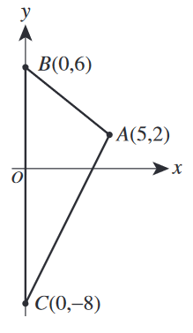

In the standard \((x,y)\) coordinate plane below, \(\triangle{ABC}\) is bounded by \(\overline{AB}\), \(\overline{AC}\), and the \(y\)-axis.
Which of the following values is closest to the area, in square coordinate units, of \(\triangle{ABC}\) ?

The base of the triangle is the distance from \(B\) to \(C\), which is 14.
The height of the triangle is the line from the base to point \(A\), perpendicular to \(\overline{BC}\). The distance of this line is 5.
$$ A = \frac{1}{2}bh$$
$$ A = \frac{1}{2}(14)(5)$$
$$ A = \boxed{35} $$